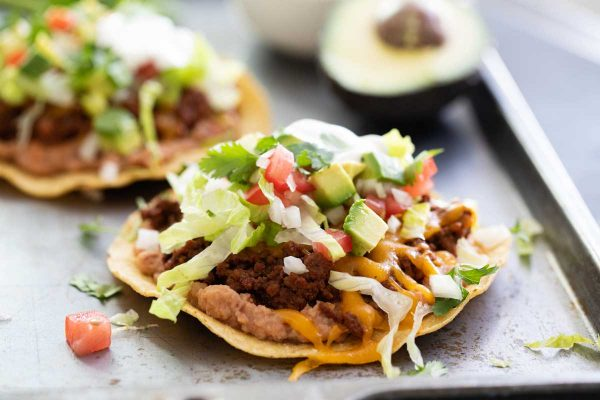

Lazy Tostadas

Tostadas are a staple Mexican dish that dates back to around 2,000 years ago! Just like a taco (but flat) they're a combination of your choice meat, beans, cheese and veggies!
Today I will be showing you how to lazy-fy this staple dish. I've been making this for years now and it ALWAYS hits the spot, and I'm hoping it will do the same for you! Being able to pick the ingredients you want, helps to ensure everyone is happy! Follow me as I show you how to feed the family, while basically putting in zero-to-no effort.
NOTE: Your tostadas will PROBABLY not look like the picture. The picture is just for referece of ingredient order! Let's go!
Ingredients
- Tostada Shells
- 1 lb Ground Beef
- 30 oz Can Refried Beans
- Your Cheese and Salsa of Choice (I Prefer Pepper Jack and Salsa Verde)
- Mexican Crema (Not Daisy Sour Cream)
- Your Veggies of Choice
Instructions
- Start to brown the ground beef in a skillet on medium heat.
- Heat up the refried beans in a saucepan on low heat, add milk for extra softness if preffered.
- Once ground beef is browned, drain and return to skillet.
- Let cool and serve!
Enjoy!